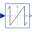

RotorDisplacementAngleRotor lagging angle |
Diagram
{kind=link}
Information
This information is part of the Modelica Standard Library maintained by the Modelica Association.
Calculates rotor lagging angle by measuring the stator phase voltages, transforming them to the corresponding space phasor in stator-fixed coordinate system, rotating the space phasor to the rotor-fixed coordinate system and calculating the angle of this space phasor.
The sensor's housing can be implicitly fixed (useSupport=false).
If the machine's stator also implicitly fixed (useSupport=false), the angle at the flange
is equal to the angle of the machine's rotor against the stator.
Otherwise, the sensor's support has to be connected to the machine's support.
Parameters (3)
| p |
Value: Type: Integer Description: Number of pole pairs |
|---|---|
| positiveRange |
Value: false Type: Boolean Description: Use only positive output range, if true |
| useSupport |
Value: false Type: Boolean Description: Use support or fixed housing |
Connectors (5)
| rotorDisplacementAngle |
Type: RealOutput |
|
|---|---|---|
| plug_p |
Type: PositivePlug |
|
| plug_n |
Type: NegativePlug |
|
| flange |
Type: Flange_a |
|
| support |
Type: Flange_a Description: support at which the reaction torque is acting |
Components (10)
| relativeAngleSensor |
Type: RelAngleSensor |
|
|---|---|---|
| constant_ |
Type: Constant |
|
| add |
Type: Add |
|
| fixed |
Type: Fixed |
|
| referenceSensor |
Type: ReferenceSensor |
|
| voltageSensor |
Type: VoltageSensor |
|
| add3_1 |
Type: Add3 |
|
| toSpacePhasor |
Type: ToSpacePhasor |
|
| toPolar |
Type: ToPolar |
|
|  | wrapAngle |
Type: WrapAngle |
Used in Examples (4)
|
Modelica.Magnetic.QuasiStatic.FundamentalWave.Examples.BasicMachines.SynchronousMachines Test example: PermanentMagnetSynchronousMachine fed by current source |
|
|
Modelica.Magnetic.QuasiStatic.FundamentalWave.Examples.BasicMachines.SynchronousMachines Test example: PermanentMagnetSynchronousMachine, investigating maximum torque per Amps |
|
|
Modelica.Magnetic.QuasiStatic.FundamentalWave.Examples.BasicMachines.SynchronousMachines Electrical excited synchronous machine operating as generator |
|
|
Modelica.Magnetic.QuasiStatic.FundamentalWave.Examples.BasicMachines.SynchronousMachines Test example: Synchronous reluctance machine fed by current source |